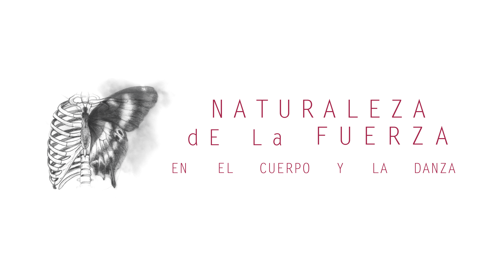

Modalidad
Presencial · Virtual

En 2026, la práctica de Alineación para estudiantes avanzados o con experiencia se realizará en formato de Encuentros de Profundización, con instancias presenciales y virtuales de práctica y reflexión.
Cada encuentro estará diseñado a partir de los asuntos de interés o preguntas de lxs estudiantes con trayectoria en la rama de Alineación. Durante los encuentros, lxs estudiantes estarán en un modo investigativo, exponiendo sus preguntas, pruebas y hallazgos que procesan en esta época en torno al asunto presentado.
Al inscribirse, cada estudiante rellena un formulario con esta información, a partir de la cual Roxana Galand diseña los encuentros.
Haber realizado al menos uno de los siguientes trayectos:
Cada estudiante rellena un formulario donde se reúnen sus datos de inscripción y, sobre todo, el asunto o pregunta de Alineación que quiere investigar este año. Con lo que cada quien comparta sobre su trayectoria y su proceso actual, Roxana Galand diseña el enfoque de cada Encuentro de Profundización.
Podés inscribirte a encuentros presenciales y/o virtuales. Si participás como oyente, podés indicarlo en la sección de consultas.
Una semana intensiva de trabajo somático en la sede de NFCD, en las afueras de Bariloche. Cada estudiante elige su valor según su posibilidad real: los tres niveles sostienen el encuentro de formas diferentes y ninguno excluye la participación.
Habilita la participación sosteniendo lo básico del encuentro.
Permite la realización del encuentro, cubriendo los gastos de funcionamiento y el honorario docente.
Impulsa el crecimiento de NFCD y sostiene a quienes eligen el valor mínimo.
Es posible hospedarse en el Hogar de Naturaleza de la Fuerza. Consultá disponibilidad y valores.
ConsultarPodés participar de los encuentros virtuales en vivo o inscribirte para verlos en diferido, a tu propio tiempo. Cada encuentro dura cuatro horas. El valor es el mismo en ambas modalidades; elegí tu aporte según tu posibilidad real.
Habilita la participación sosteniendo lo básico.
Permite la realización del encuentro virtual, cubriendo los gastos de funcionamiento y el honorario docente.
Impulsa el crecimiento de NFCD: incluye contribución al Fondo de Becas y al Fondo de Desarrollo Institucional.
En Campo, ubicado en Arroyo del Medio, entre el bosque, el agua y la montaña, se encuentra el hogar y escuela de NFCD, donde realizamos convivencias, seminarios y encuentros de práctica y estudio.
